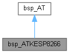
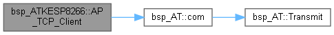
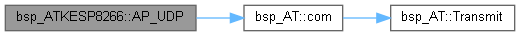
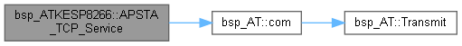
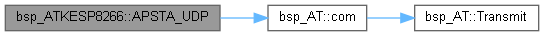
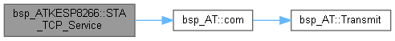

实现驱动ATKESP8266的类 更多...
#include <bsp_ATKESP8266.h>
类 bsp_ATKESP8266 继承关系图:

bsp_ATKESP8266 的协作图:

Public 成员函数 | |
| void | TCP_Service_T (u8 cha, u32 len) |
| 准备发送数据 更多... | |
| void | TCP_Client_T (void) |
| 准备发送数据 更多... | |
| void | UDP_Service_T (u32 len) |
| 准备发送数据 更多... | |
| void | AP_TCP_Service (const char *SSID, const char *PIN, const char *port) |
| 设置为AP,TCP服务器模式 更多... | |
| void | AP_TCP_Client (const char *SSID, const char *PIN, const char *IP, const char *port) |
| 设置为AP,TCP客户端模式 更多... | |
| void | AP_UDP (const char *SSID, const char *PIN, const char *IP, const char *port) |
| 设置为AP,UDP模式 更多... | |
| void | STA_TCP_Service (const char *WIFISSID, const char *WIFIPIN, const char *port) |
| 设置为STA,TCP客户端模式 更多... | |
| void | STA_TCP_Client (const char *WIFISSID, const char *WIFIPIN, const char *IP, const char *port) |
| 设置为STA,TCP客户端模式 更多... | |
| void | STA_UDP (const char *WIFISSID, const char *WIFIPIN, const char *IP, const char *port) |
| 设置为STA,UDP模式 更多... | |
| void | APSTA_TCP_Service (const char *SSID, const char *PIN, const char *WIFISSID, const char *WIFIPIN, const char *port) |
| 设置为AP&STA,TCP服务器模式 更多... | |
| void | APSTA_TCP_Client (const char *SSID, const char *PIN, const char *WIFISSID, const char *WIFIPIN, const char *IP, const char *port) |
| 设置为AP&STA,TCP客户端模式 更多... | |
| void | APSTA_UDP (const char *SSID, const char *PIN, const char *WIFISSID, const char *WIFIPIN, const char *IP, const char *port) |
| 设置为AP&STA,UDP模式 更多... | |
| virtual void | Transmit (u8 *dat, u16 len) |
| 发送数据到端口 更多... | |
 Public 成员函数 继承自 bsp_AT Public 成员函数 继承自 bsp_AT | |
| void | com (const char *dat) |
| 发送一条AT指令,已加AT+与\r 尾 更多... | |
额外继承的成员函数 | |
| virtual void | Transmit (u8 *dat, u16 len)=0 |
| 发送数据到端口 更多... | |
详细描述
实现驱动ATKESP8266的类
在文件 bsp_ATKESP8266.h 第 42 行定义.
成员函数说明
◆ AP_TCP_Client()
| void bsp_ATKESP8266::AP_TCP_Client | ( | const char * | SSID, |
| const char * | PIN, | ||
| const char * | IP, | ||
| const char * | port | ||
| ) |
设置为AP,TCP客户端模式
- 参数
-
SSID 设置网络名称 PIN 设置网络密码 IP 设置连接的IP port 设置开放端口
在文件 bsp_ATKESP8266.cpp 第 65 行定义.
函数调用图:

◆ AP_TCP_Service()
| void bsp_ATKESP8266::AP_TCP_Service | ( | const char * | SSID, |
| const char * | PIN, | ||
| const char * | port | ||
| ) |
◆ AP_UDP()
| void bsp_ATKESP8266::AP_UDP | ( | const char * | SSID, |
| const char * | PIN, | ||
| const char * | IP, | ||
| const char * | port | ||
| ) |
设置为AP,UDP模式
- 参数
-
SSID 设置网络名称 PIN 设置网络密码 IP 设置连接的IP port 设置开放端口
在文件 bsp_ATKESP8266.cpp 第 85 行定义.
函数调用图:

◆ APSTA_TCP_Client()
| void bsp_ATKESP8266::APSTA_TCP_Client | ( | const char * | SSID, |
| const char * | PIN, | ||
| const char * | WIFISSID, | ||
| const char * | WIFIPIN, | ||
| const char * | IP, | ||
| const char * | port | ||
| ) |
设置为AP&STA,TCP客户端模式
- 参数
-
SSID 设置网络名称 PIN 设置网络密码 WIFISSID 设置连接网络名称 WIFIPIN 设置连接网络密码 IP 设置连接IP port 设置连接端口
在文件 bsp_ATKESP8266.cpp 第 185 行定义.
函数调用图:
◆ APSTA_TCP_Service()
| void bsp_ATKESP8266::APSTA_TCP_Service | ( | const char * | SSID, |
| const char * | PIN, | ||
| const char * | WIFISSID, | ||
| const char * | WIFIPIN, | ||
| const char * | port | ||
| ) |
设置为AP&STA,TCP服务器模式
- 参数
-
SSID 设置网络名称 PIN 设置网络密码 WIFISSID 设置连接网络名称 WIFIPIN 设置连接网络密码 port 设置开放端口
在文件 bsp_ATKESP8266.cpp 第 161 行定义.
函数调用图:

◆ APSTA_UDP()
| void bsp_ATKESP8266::APSTA_UDP | ( | const char * | SSID, |
| const char * | PIN, | ||
| const char * | WIFISSID, | ||
| const char * | WIFIPIN, | ||
| const char * | IP, | ||
| const char * | port | ||
| ) |
设置为AP&STA,UDP模式
- 参数
-
SSID 设置网络名称 PIN 设置网络密码 WIFISSID 设置连接网络名称 WIFIPIN 设置连接网络密码 IP 设置连接IP port 设置连接端口
在文件 bsp_ATKESP8266.cpp 第 211 行定义.
函数调用图:

◆ STA_TCP_Client()
| void bsp_ATKESP8266::STA_TCP_Client | ( | const char * | WIFISSID, |
| const char * | WIFIPIN, | ||
| const char * | IP, | ||
| const char * | port | ||
| ) |
设置为STA,TCP客户端模式
- 参数
-
WIFISSID 设置连接网络名称 WIFIPIN 设置连接网络密码 IP 设置连接IP port 设置连接端口
在文件 bsp_ATKESP8266.cpp 第 121 行定义.
函数调用图:
◆ STA_TCP_Service()
| void bsp_ATKESP8266::STA_TCP_Service | ( | const char * | WIFISSID, |
| const char * | WIFIPIN, | ||
| const char * | port | ||
| ) |
设置为STA,TCP客户端模式
- 参数
-
WIFISSID 设置连接网络名称 WIFIPIN 设置连接网络密码 port 设置连接端口
在文件 bsp_ATKESP8266.cpp 第 103 行定义.
函数调用图:

◆ STA_UDP()
| void bsp_ATKESP8266::STA_UDP | ( | const char * | WIFISSID, |
| const char * | WIFIPIN, | ||
| const char * | IP, | ||
| const char * | port | ||
| ) |
设置为STA,UDP模式
- 参数
-
WIFISSID 设置连接网络名称 WIFIPIN 设置连接网络密码 IP 设置连接IP port 设置连接端口
在文件 bsp_ATKESP8266.cpp 第 141 行定义.
函数调用图:
◆ TCP_Client_T()
| void bsp_ATKESP8266::TCP_Client_T | ( | void | ) |
◆ TCP_Service_T()
◆ Transmit()
◆ UDP_Service_T()
| void bsp_ATKESP8266::UDP_Service_T | ( | u32 | len | ) |
该类的文档由以下文件生成:
- D:/gitt/MicrochipFor32/bsp_Device/bsp_AT/bsp_ATKESP8266.h
- D:/gitt/MicrochipFor32/bsp_Device/bsp_AT/bsp_ATKESP8266.cpp